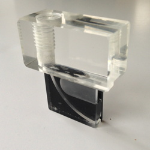

Laborationen går ut på att bestämma beta-spektrum av Yttrium-90 med hjälp av en magnetisk spektrometer. En viktig del av laborationen är databehandlingen: mätintervallets inverkan på den experimentella fördelningsfunktionen och statistiska fluktuationer i antalen detekterade partiklar.
Beta-partiklarär elektroner, och de avlänkas av magnetfält på samma sätt som i e/m-experimentet. Skillnaden är att de kinetiska energierna är 10 000 gånger större. Det innebär att deras kinetiska energi är större än vilomassan, partiklarna har relativistiska hastigheter.
|  | Elektronernas bana definieras av ett kvartscirkelformat spår i en plexiglasplatta av Frederiksen, Ølgod, se bilden intill. Innerradien rmin år 28 mm och ytterradien rmax år 30 mm. Vid spårets början kan β-källan skruvas in. Vid spårets andra öppning placeras ett GM-rör. Plexiglasplattan hänger mellan polskorna av en elektromagnet. I plexiglaset finns plats för en Hallplatta som mäter magnetfältet B. Centripetalkraften utgörs av Lorentzkraften enligt vilket ger att rörelsemängd p = mv är |
Sambandet gäller även om rörelsemängd är relativistisk
p = γmov.
Med den relativistiska formeln för total energi E² = p²c² + (moc²)²
får man följande uttryck för partikelns kinetiska energi:
Det är lämpligast att räkna i enheter av MeV. Om B ges i tesla och r i centimeter blir uttrycket
För en given fältstyrka kommer endast β-partiklar inom ett visst energi-intervall att nå fram till detektorn. Den undre och övre intervallgränsen bestäms av rmin och rmax. Genom att mäta antalet registrerade pulser per sekund i GM-röret för olika fältstyrkor kan vi bestämma hur stor andel av betapartiklarna som har en viss energi, dvs ett betaspektrum.
Bestäm rätt riktning för magnetfältet. Ta en mätserie med ungefär tio olika fältstyrkor mellan noll och ≈400 mT. En lämplig mättid kan vara 100 sekunder. Den relativa mätosäkerheten är omvänt proportionell mot mättiden - längre är bättre, men en timme är bara dubbelt så bra som en kvart.
Observera den maximalt tillåtna strömmen genom spolarna. Känn också efter med handen på spolarna, att de inte blir för varma...
GM-röret är inte bara känslig för β-partiklar utan även för gamma-strålning. Strontium-källan ger därför en bakgrundintensitet som inte beror på magnetfält. Man kan mäta bakgrunden och subtrahera den. Här finns dock ett problem att bakgrunden ökar den statistiska osäkerheten. Om man mäter N pulser i en viss tid, är skattningen av standardavvikelsen σ = √N. Oavsett om man adderar eller subtraherar två mätningar är skattningen av osäkerheten σ = √σa² + σb².
Mät därför bakgrunden utan magnetfält med Sr-preparatet på plats under en längre tid, så att åtminstone 200 pulser registreras. Man kan göra det med fördel under lång tid, till exempel under en fikapaus.
Det man är intresserad av är mängden pulser per energiinterval, ΔN/ΔE eller dN/dE. Men i vårt experiment blir energiintervallet större vid högre energier. De obearbetade värden underskattar alltså spektralintensiteten vid lägre energier. Beräkningen måste korrigera för det.
Grafen ska också visa standardfelen i spektrum. Räkna ut standardavvikelse och lägg dem i en ny kolumn som kan heta sigma. I Logger Pro kan man under "Column Options" för y-punkterna hitta en check-box för "Error bar calculations". Välj "Use column". Se hur bra mätningar stämmer med beräknade beta-spektrum.